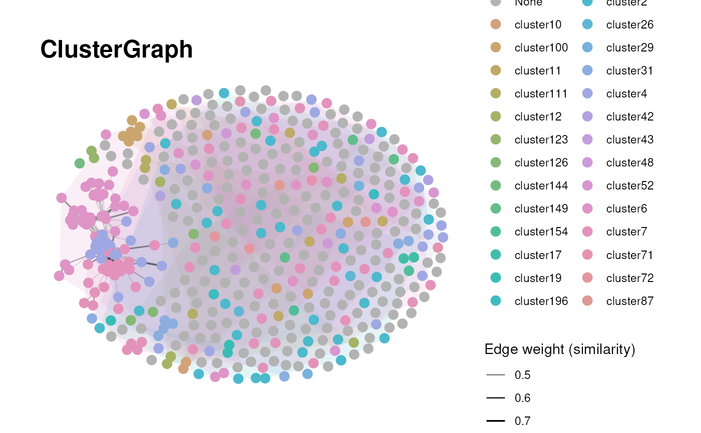

Graph visualization for clustered terms
Usage
viz_graph(
similarity_matrix,
clusters,
plot_threshold = 0.5,
plot_name = "ClusterGraph",
max_nodes = NULL,
min_degree = NULL,
node_sizes = NULL,
show_density = FALSE,
seed = NULL,
save_plot = "svg",
print_plot = TRUE,
path = NULL,
plot_width = 3000,
plot_height = 2000,
plot_unit = "px"
)Arguments
- similarity_matrix
Square numeric matrix of term similarity values. Row/column names must match
clustersnames.- clusters
Named vector of cluster labels for each term (e.g., "cluster1").
- plot_threshold
Similarity threshold used to define edges. Values below the threshold are removed. Default = 0.5.
- plot_name
Optional: String added to output files of the plot. Default = "ClusterGraph".
- max_nodes
Optional: Maximum nodes for plotting. If set, keeps nodes from the largest component up to this limit (by degree).
- min_degree
Optional: Minimum degree filter for graph plotting.
- node_sizes
Optional: Named numeric vector of node sizes, with names matching term IDs. Values are scaled for plotting.
- show_density
Optional: If TRUE, add a hull background per cluster. Default = FALSE.
- seed
Optional: Random seed for graph layout reproducibility. Default = NULL.
- save_plot
Optional: Select the file type of output plots. Options are svg, pdf, png or NULL. Default = "svg"
- print_plot
Optional: If TRUE prints an overview of resulting plots. Default = TRUE
- path
Optional: String which is added to the resulting folder name. default: NULL
Examples
# Load example data
d <- metsigdb_kegg()
# Run clustering with graph plotting
r <- cluster_pk(
d,
metadata_info = c(
metabolite_column = "MetaboliteID",
pathway_column = "term"
),
input_format = "long",
similarity = "jaccard",
threshold = 0.2,
clust = "community",
min = 2,
plot_name = "GraphExample_long_format",
save_plot = "png",
min_degree = 1,
seed = 123,
show_density = FALSE,
max_nodes = 1000
)
#> Warning: No shared levels found between `names(values)` of the manual scale and the
#> data's fill values.
#> Warning: ggrepel: 388 unlabeled data points (too many overlaps). Consider increasing max.overlaps
# run graph plotting separately from clustering output but without node_sizes
viz_graph(
r$similarity_matrix,
r$clusters,
plot_threshold = 0.5,
plot_name = "ClusterGraph",
max_nodes = NULL,
min_degree = NULL,
node_sizes = NULL,
show_density = TRUE,
seed = 123,
save_plot = NULL,
print_plot = FALSE,
path = NULL
)
#> Warning: ggrepel: 451 unlabeled data points (too many overlaps). Consider increasing max.overlaps
